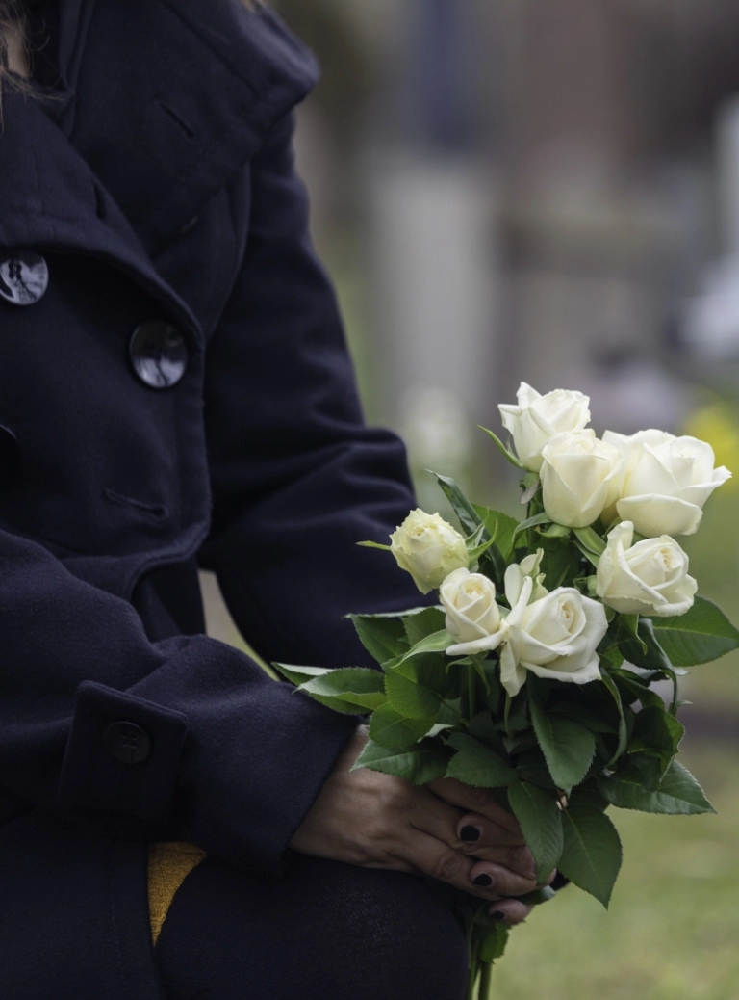

Organizacja stypy — Gdynia, Gdańsk
Zaplanujemy czas dla rodziny i przyjaciół wraz z poczęstunkiem — w spokoju i zadumie.
Nasza oferta usług pogrzebowych obejmuje organizację stypy w Gdyni, Gdańsku i okolicznych miejscowościach. Dla wielu osób możliwość spotkania z bliskimi po zakończeniu ceremonii pochówku to ważny etap. Zaplanujemy czas dla rodziny i przyjaciół wraz z poczęstunkiem, tak aby wszyscy zebrani żałobnicy mogli odpocząć, porozmawiać i zjeść ciepły posiłek.
Choć stypa nie jest obowiązkowym elementem pogrzebu, większość osób decyduje się na jej organizację. To moment, w którym można zobaczyć się z bliższą oraz dalszą rodziną, która przybyła na ceremonię pochówku. Zaproszenie gości na stypę to pewien rodzaj podziękowania za uczestnictwo w pogrzebie i udzielone w tym czasie wsparcie.
Organizacja stypy przez zakład pogrzebowy
Śmierć bliskiej osoby to trudny czas, w którym trudno skupić się na zaplanowaniu stypy. Nasza firma wyręczy Państwa we wszystkich formalnościach związanych z organizacją tego wydarzenia po uzyskaniu od Państwa wszystkich niezbędnych informacji, dotyczących między innymi liczby gości oraz preferowanego miejsca. Jeśli planują Państwo zorganizować stypę w domu, nasze usługi pogrzebowe obejmują również zamówienie cateringu.
Organizacja stypy przez zakład pogrzebowy niesie ze sobą wiele korzyści. Zyskują Państwo pewność, że wszystkie niezbędne kwestie zostaną dopięte na ostatni guzik. Nie muszą Państwo samodzielnie zajmować się formalnościami, co pozwala oddać się modlitwie lub wspomnieniom.
Jak długo powinna trwać stypa?
Stypa to ważny moment spotkania rodziny i przyjaciół po ceremonii pogrzebowej, który pozwala na wspólne wspominanie zmarłego oraz okazanie wsparcia najbliższym. W praktyce długość takiego wydarzenia jest bardzo zróżnicowana i zależy od indywidualnych oczekiwań organizatorów oraz zaproszonych gości. Najczęściej trwa od dwóch do czterech godzin, co pozwala na spokojne zjedzenie posiłku, rozmowy oraz chwilę refleksji w przyjaznej atmosferze.
Ważne jest, aby podczas planowania uwzględnić komfort gości – zbyt krótka stypa może sprawić, że uczestnicy nie będą mieli okazji do godnego pożegnania, natomiast zbyt długa może powodować zmęczenie. Warto też zaznaczyć, że stypa nie jest ściśle formalnym wydarzeniem, dlatego jej długość może się różnić w zależności od tradycji rodzinnych czy liczby zaproszonych osób.
Jaki jest koszt organizacji stypy w restauracji?
Główne elementy wpływające na koszt organizacji stypy w restauracji to liczba gości, wybrane menu, lokalizacja lokalu, a także dodatkowe usługi, takie jak dekoracje sali/stołów oraz obsługa kelnerska. Podstawowym kosztem jest cena za posiłek — średnia cena za osobę na stypie w restauracji waha się zazwyczaj od 80 do 100 złotych. Menu może być często komponowane indywidualnie, co pozwala na dostosowanie wydatków do budżetu rodziny.
Innym ważnym czynnikiem jest opłata za wynajem sali, która może być wliczona w cenę menu lub naliczana osobno. W niektórych lokalach wynajem sali jest bezpłatny pod warunkiem zamówienia określonej liczby posiłków. Organizacja stypy w lokalu poza domem często jest bardziej opłacalna i wygodna – tego rodzaju miejsca mają duże doświadczenie w obsłudze takich wydarzeń.
Skąd wzięła się tradycja organizowania stypy?
Stypa to wielowiekowa tradycja – pierwsze wzmianki na jej temat pojawiają się już w opisach zwyczajów pierwszych Słowian. Wówczas była to uroczysta uczta organizowana na cmentarzu po pogrzebie kogoś bliskiego lub znanej osoby. U Słowian wschodnich i południowych stypa przetrwała w postaci obchodów Zaduszek połączonych z ucztowaniem.
Obecnie stypa to uroczystość organizowana po pogrzebie, niezależnie od wyznania. Stanowi formę podziękowania dla uczestników ceremonii pogrzebowej. Częścią stypy jest konsolacja, czyli pocieszenie osób, które doświadczyły bólu z powodu utraty najbliższego członka rodziny. Pomaga uporać się ze stratą i przetrwać ten trudny okres w życiu.